Bộ etude này được xuất bản vào năm 1833 (một vài tài liệu cho rằng vào năm 1829). Chopin đã 23 tuổi và được biết tới vai trò nhà soạn nhạc và nghệ sĩ piano tại Paris, nơi anh ta đã kết bạn với Franz Liszt. Tình cờ, Chopin đề tặng bộ etude này cho Franz Liszt.
STT
Những bar đầu
Nội dung
No 1 (C major)
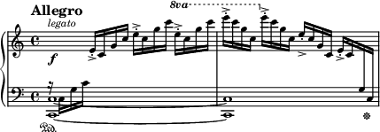
Đây là một tác phẩm nổi bật với kỹ thuật ngón tay nhanh, sử dụng các hợp âm lặp đi lặp lại. Etude này yêu cầu người biểu diễn có khả năng kiểm soát hoàn hảo nhịp độ và sự ổn định của âm thanh.
No 2 (A minor)
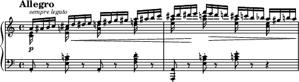
Etude này có một giai điệu ngọt ngào, nhẹ nhàng với kỹ thuật tay phải chơi các nốt trôi chảy, trong khi tay trái cần tạo ra nền vững chắc. Một trong những tác phẩm dễ nhận diện của Chopin.
No 3 (E major)
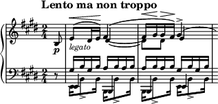
Etude này mang đến một cảm giác thanh thoát với một giai điệu nổi bật ở tay phải, đan xen với các hòa âm thanh thoát ở tay trái. Đây là một trong những Etude có tầm ảnh hưởng lớn trong các chương trình hòa tấu piano.
No 4 (C# minor)
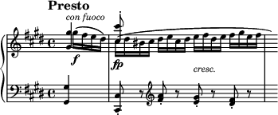
Một Etude đầy cảm xúc với nhịp điệu rộn ràng, có đoạn chuyển tông phức tạp và sự đột phá về mặt kỹ thuật. Etude này yêu cầu kỹ năng xử lý ngón tay mềm mại và kiểm soát tốt âm lượng.
No 5 (Gb major)
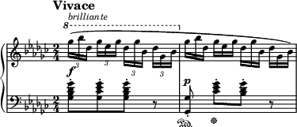
Đây là một tác phẩm có giai điệu nhẹ nhàng và du dương, đặc trưng với kỹ thuật ngón tay nhịp nhàng, rất phù hợp với khả năng điều khiển tay phải và tay trái độc lập.
No 6 (Eb minor)
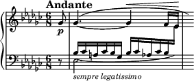
Etude này là một tác phẩm đậm tính bi kịch, với những hợp âm mạnh mẽ và chuyển tông bất ngờ. Người biểu diễn cần có kỹ thuật chuyển động nhanh và chính xác giữa các nốt.
No 7 (C major)
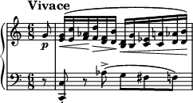
Một tác phẩm khá dễ tiếp cận với một giai điệu nhẹ nhàng ở tay phải và kỹ thuật nhấn mạnh vào các nốt đơn giản nhưng đầy tinh tế. Là một Etude rất ít được biểu diễn, nhưng vẫn có sức hút lớn trong các chương trình hòa tấu.
No 8 (F major)
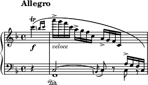
Etude này yêu cầu kỹ năng quản lý sự thay đổi nhanh chóng giữa các âm vực rộng của tay trái và tay phải. Với kỹ thuật đổi tay và nhấn mạnh nhịp điệu, tác phẩm này đậm chất đối thoại giữa hai tay.
No 9 (F minor)
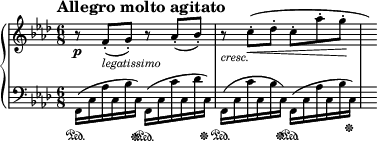
Một tác phẩm phức tạp với sự phát triển nhanh của các nốt nhạc, đi kèm với một giai điệu dâng trào đầy cảm xúc. Etude này yêu cầu người biểu diễn có khả năng kiểm soát nhanh và tinh tế, đặc biệt là ở tay trái.
No 10 (Db major)
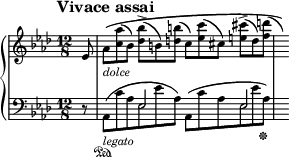
Đây là một tác phẩm đầy thử thách với các đoạn chuyển tông và các hợp âm nhanh chóng. Etude này yêu cầu người chơi có khả năng điều chỉnh nhanh chóng và mạnh mẽ, đồng thời duy trì sự mượt mà trong các chuyển động.
No 11 (Eb major)
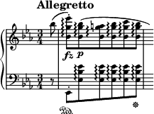
Tác phẩm này mang đến một cảm giác tươi mới và sáng tạo, với các kỹ thuật chơi liên tiếp không dừng, mang đến sự tự do trong biểu cảm âm nhạc.
No 12 (C minor)
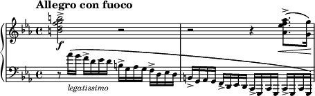
Etude cuối cùng trong bộ này là một tác phẩm nổi bật với giai điệu mạnh mẽ, đầy tính kịch tính. Đây là một trong những Etudes yêu cầu sự kiểm soát tuyệt vời của ngón tay và sự nhạy bén trong việc thay đổi âm sắc, đồng thời tăng tốc độ một cách linh hoạt.